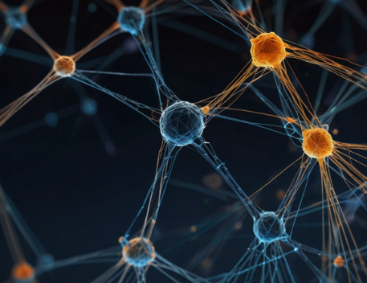

Redes Neuronales: 1943
Las redes neuronales son modelos de inteligencia artificial que imitan el funcionamiento del cerebro. Están formadas por "neuronas" conectadas entre sí, que procesan datos para aprender y resolver problemas como reconocer imágenes, traducir idiomas o predecir resultados.
Volver a la página principal